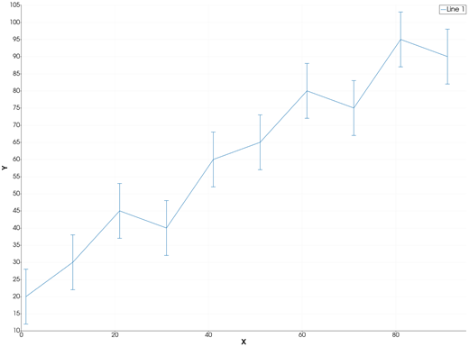
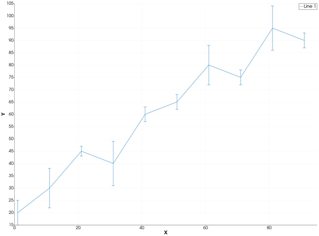
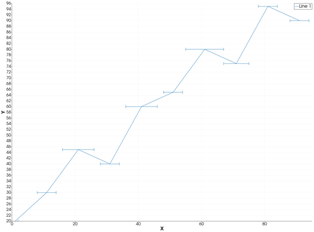
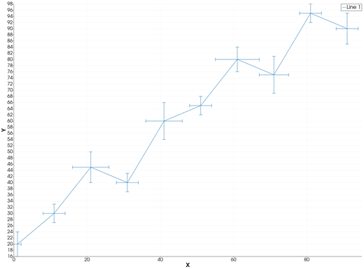
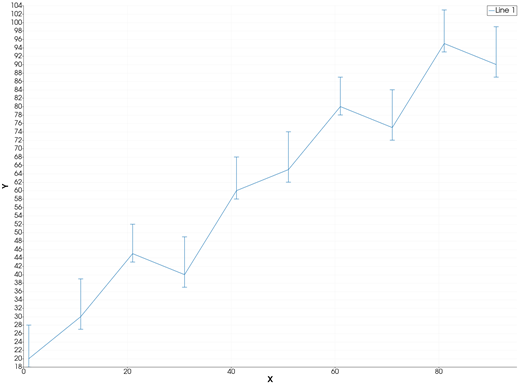
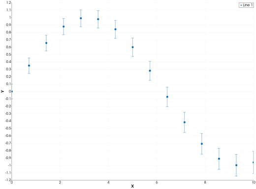
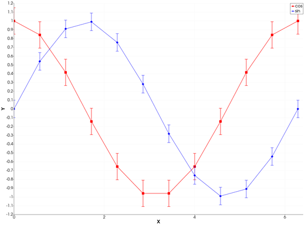

errorbar — Line Plot with Error Bars
The errorbar icon on the X,Y Plot tool's gallery row draws each series of the current page as a line with an error bar at every point: a capped segment from the point's lower to its upper limit, vertical, horizontal or both. From Julia, the errors are given to plot with GMT.jl's error_bars keyword.
Syntax
p = plot(x, y; error_bars=(y=err,))
p = plot(x, y; error_bars=(x=err,))
p = plot(x, y; error_bars=(x=xerr, y=yerr))
p = plot(x, y; error_bars=(y=[neg pos], asym=true))
p = plot(x, y; error_bars=(y=err,), key=value, ...)
plot!(p, x, y; error_bars=(y=err,))Description
plot(x, y; error_bars=(y=err,))draws the line(x, y)with a vertical error bar at each point, fromy - errtoy + err.error_bars=(x=err,)draws horizontal error bars, fromx - errtox + err.error_bars=(x=xerr, y=yerr)draws both.- With
asym=true, each axis takes a two-column matrix[neg pos]: the bar runs fromy - negtoy + pos. errmay also be a single number, the same for every point.- The other keywords set the line, as in
plot: colour, width, style, markers, legend.
The axes always show the whole of every bar. One series carries its errors: a call with error_bars draws one line.
The errorbar icon
Clicking errorbar on the gallery row re-plots the current page with the error bars its series carry. A series without errors opens the Error bars dialog for it:
- Series — the series that gets the error bars.
- Values from — another series of the page (its Y values, row by row), a Constant, or a % of Y of each point.
- Value — the constant, or the percentage.
- Direction — Vertical (Y), Horizontal (X) or Both.
- Hide the series the values come from — that series' numbers are now the bars, so its own line is hidden (not deleted).
Series that still carry no errors stay lines. Click errorbar again to give them theirs.
Running the Examples
Paste each example into the iGMT window's Julia console, or into the Julia REPL after using InteractiveGMT. Each one is complete on its own and draws a new page of the X,Y Plot window.
Examples
Plot Vertical Error Bars of Equal Length
Create vectors x and y, and draw y against x with an error bar of length 8 above and below each point.
x = 1:10:100
y = [20, 30, 45, 40, 60, 65, 80, 75, 95, 90]
p = plot(x, y; error_bars=(y=8,))
Plot Vertical Error Bars That Vary in Length
x = 1:10:100
y = [20, 30, 45, 40, 60, 65, 80, 75, 95, 90]
err = [5, 8, 2, 9, 3, 3, 8, 3, 9, 3]
p = plot(x, y; error_bars=(y=err,))
Plot Horizontal Error Bars
x = 1:10:100
y = [20, 30, 45, 40, 60, 65, 80, 75, 95, 90]
err = [1, 3, 5, 3, 5, 3, 6, 4, 3, 3]
p = plot(x, y; error_bars=(x=err,))
Plot Vertical and Horizontal Error Bars
x = 1:10:100
y = [20, 30, 45, 40, 60, 65, 80, 75, 95, 90]
p = plot(x, y; error_bars=(x=[1, 3, 5, 3, 5, 3, 6, 4, 3, 3], y=[4, 3, 5, 3, 6, 3, 4, 6, 3, 5]))
Plot Asymmetric Error Bars
Each row of the matrix is one point's [neg pos]: the bar runs further up than down.
x = 1:10:100
y = [20, 30, 45, 40, 60, 65, 80, 75, 95, 90]
neg = [2, 3, 2, 3, 2, 3, 2, 3, 2, 3]
pos = [8, 9, 7, 9, 8, 9, 7, 9, 8, 9]
p = plot(x, y; error_bars=(y=[neg pos], asym=true))
Plot Error Bars with No Line
Draw markers at the points and no line joining them.
x = range(0, 10; length=15)
y = sin.(x / 2)
p = plot(x, y; error_bars=(y=0.1 .+ 0.05 .* x / 10,), ls=:none, marker=:circle, ms="5p")
Control the Look
Colour, width and markers are the line's own keywords; the error bars are drawn in the line's colour and width.
x = range(0, 2π; length=12)
y = cos.(x)
p = plot(x, y; error_bars=(y=0.15,), lc=:red, lw=1.5, marker=:square, ms="5p", legend="cos")
plot!(p, x, sin.(x); error_bars=(y=0.1,), lc=:blue, marker=:diamond, ms="5p", legend="sin")
Take the Errors from Another Series
A file with three columns — x, y and its error — opens in the X,Y Plot tool as two series. Draw it with multicol=true the same way, then click errorbar: in the dialog keep Series: Line 1, pick Values from: Series: Line 2, and the second series becomes the first one's error bars.
x = 1:12
y = 10 .+ 3 .* sin.(x ./ 2)
p = plot([x y 0.4 .+ 0.2 .* cos.(x)]; multicol=true)Input Arguments
x, y — the line, as in plot.
err — error values, a vector with one value per point, or a single number. Values are lengths from the point, so they are taken as positive.
[neg pos] — asymmetric errors (with asym=true), a matrix with one row per point: the length below (or left of) and above (or right of) the point.
Keywords
| Keyword | Values | Default |
|---|---|---|
error_bars, E, error, errorbars | (y=err,), (x=err,), (x=xerr, y=yerr); asym=true with [neg pos] matrices | none |
lc, lw, ls, pen, marker, ms, mc, legend | the line, as in plot |
The error bars are kept with the series: they are saved in an X,Y session, and File > Plot with GMT.jl writes them as GMT.jl's error_bars.
See Also
plot — 2-D Line Plot · bubblechart — Bubble Chart · X,Y Plot Tool